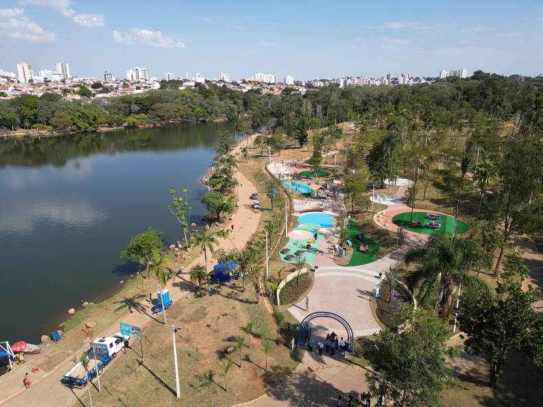

Introdução e Cultura
Campinas é uma cidade do interior de São Paulo com aproximadamente 1,2 milhão de habitantes, reconhecida por sua relevância econômica, tecnológica e cultural. A cidade combina planejamento urbano eficiente, áreas verdes, infraestrutura moderna e serviços públicos de qualidade, consolidando-se como um polo de desenvolvimento sustentável. Campinas é referência em educação, saúde e inovação, atraindo investimentos e talentos de todo o país.

O panorama cultural é diversificado, com teatros, museus, centros culturais e bibliotecas que oferecem programação artística e educativa. Festivais de música, dança, cinema e literatura promovem integração social e valorizam a produção cultural local, aproximando a população de experiências enriquecedoras e incentivando a preservação da identidade regional.
O urbanismo da cidade equilibra áreas residenciais, comerciais e de lazer, com parques, ciclovias e espaços de convivência. A cidade investe em tecnologia, ciência e inovação, possuindo universidades, centros de pesquisa e incubadoras que conectam empreendedorismo, cultura e desenvolvimento econômico, tornando Campinas um modelo de cidade inteligente e sustentável.
Turismo, Passeios e Gastronomia
Entre os principais pontos turísticos estão o Parque Portugal (Lagoa do Taquaral), o Observatório Municipal, o Centro Histórico e o Teatro Municipal. A cidade oferece passeios gratuitos em parques, praças e ciclovias, além de eventos culturais e feiras que estimulam lazer e entretenimento para moradores e turistas. Caminhadas, exposições e atividades ao ar livre fortalecem a integração social e promovem contato com a natureza.

A gastronomia de Campinas é variada, incluindo restaurantes de cozinha brasileira, italiana, internacional, cafés, bares e confeitarias. Feiras de produtos orgânicos, mercados e eventos culinários valorizam a produção local e proporcionam experiências únicas. A cidade combina tradição e inovação culinária, fortalecendo o turismo e a economia criativa.
Além disso, festivais gastronômicos e eventos culturais promovem interação social, lazer e valorização da arte e da culinária local, consolidando Campinas como destino cultural, educacional e gastronômico no interior paulista.

Economia, Inovação e Curiosidades
A economia de Campinas é robusta, com destaque para tecnologia, indústria, comércio, serviços e educação. A cidade abriga parques tecnológicos, centros de pesquisa e universidades renomadas que fomentam inovação e atraem investimentos nacionais e internacionais. O planejamento urbano inteligente e sustentável garante desenvolvimento econômico equilibrado e qualidade de vida.
Projetos de inovação incluem incubadoras de empresas, políticas públicas sustentáveis e iniciativas de urbanismo inteligente. A cidade investe em mobilidade, educação, pesquisa e empreendedorismo, promovendo integração entre população, governo e setor privado, consolidando Campinas como polo de referência tecnológica e cultural.
Entre as curiosidades, Campinas é famosa por abrigar importantes instituições de ensino, como a UNICAMP, e por sediar eventos científicos e culturais de grande relevância. A cidade combina tradição, inovação e modernidade, sendo um exemplo de planejamento urbano eficiente e qualidade de vida no interior paulista.